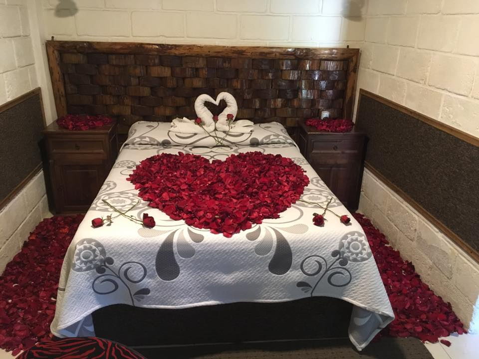

Contamos con una gran variedad de habitaciones para que su estancia sea mas agradable, contamos con cabanas, remolque, cuarto regular

Contamos con diversos servicios, los cuales incluyen decoracion de la habitacion para ocasiones especiales, asi como la preparacion de cenas romanticas
Carretera Atlixco - Tianguismanalco Km. 3, 74240 Tianguismanalco, Pue.